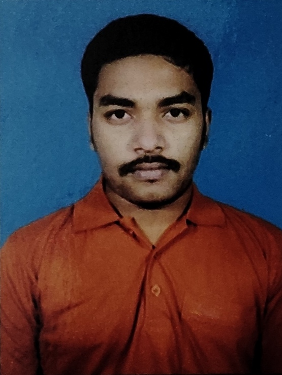

|  | TATHAGATA GUPTA |
| Fresher Computer Science Engineer | Proficient in C, C++, CSS, HTML, JavaScript, Data Structures and Algorithms, DBMS | Excellent Academic Background with 90 94.9% in CBSE HSC | Seeking Opportunities for Entry-Level Position |
| Graduation- | College- JIS College of Engineering, Kalyani | B. Tech (Computer Science and Engineering) | Year of Passing- 2023 | Grade- 8.4/10 |
| Class XII- | School- Kendriya Vidyalaya No.1 Kancharapara | Science | Year of Passing- 2019 | Grade- 71/100 |
| Class X- | School- Kendriya Vidyalaya No.1 Kancharapara | Year of Passing- 2017 | Grade- 89/100 |